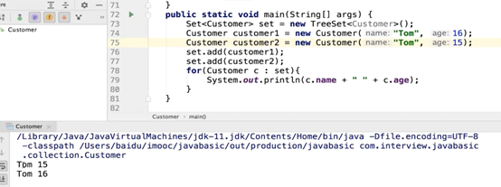
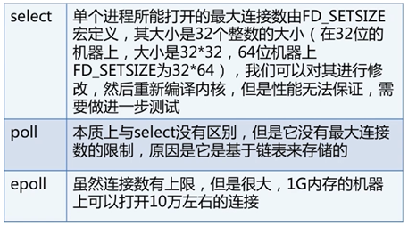

Java常用类库与技巧
盘点了Java常用类库与技巧
- Java异常
- Error和Exception的区别
- 常见Error以及Exception
- Java的异常处理机制
- Java异常的处理原则
- 高效主流的异常处理框架
- Try-catch的性能
- Java集合框架
- 集合之Map
- 为什么重写equals要重写HashCode
- Java util concurrent（JUC）
- 同步与异步
- 阻塞和非阻塞
- BIO (同步阻塞I/O模式)
- NIO（同步非阻塞）
- AIO （异步非阻塞I/O模型）
- NIO 如何实现多路复用功能
- AIO、BIO、NIO的适用场景
- NIO的核心概念
Java异常
异常处理机制主要回答了三个问题
Ø What：异常类型回答了什么被抛出
Ø Where：异常堆栈跟踪回答了在哪抛出
Ø Why：异常信息回答了为什么被抛出
Error和Exception的区别
从概念角度解析Java的异常处理机制
Ø Error：程序无法处理的系统错误，编译器不做检查
Ø Exception：程序可以处理的异常，捕获后可能恢复
Ø 总结：前者是程序无法处理的错误，后者是可以处理的异常
RuntimeException：不可预知的，程序应当自行避免
非RuntimeException：可预知的，从编译器校验的异常
从责任角度看
Error属于JVM需要负担的责任；
RuntimeException是程序应该负担的责任；
Checked Exception可检查异常是Java编译器应该负担的责任
Checked Exception是编译器必须要追踪且处理的异常，可以使用Try catch处理，或者使用throws 来抛出异常。虽然抛出异常可以抛出异常的父类，但是还是不要泛化异常，以便查询到异常。
如果写方法的时候不使用try catch来捕获异常，则需要在调用此方法的位置进行处理。
如果调用者知道如何处理异常便可以使用try catch来处理。
如果不知道的话也可以向上抛出异常，将异常层层上抛直到被处理，或者到顶层抛出异常为止，这里main函数是顶层，如果直接throws就会终止程序。
常见Error以及Exception
RuntimeException
NullPointerException-空指针引用异常
ClassCastException-类型强制转换异常
IllegalArgumentException-传递非法参数异常
IndexOutOfBoundsException-下标越界异常
NumberFormatException-数字格式异常
非RuntimeException
ClassNotFoundException-找不到指定class的异常
IOException-IO操作异常
Error
NoClassDefFoundError-找不到class定义的异常
StackOverFlowError-深递归导致栈被耗尽而抛出的异常
OutOfMemoryError-内存溢出异常
NoClassDefFoundError的成因
类依赖的class或者jar不存在
类文件存在，但是存在不同的域中
大小写问题，javac编译的时候是无视大小写的，很有可能编译出来的class文件就与想要的不一样
Java的异常处理机制
Ø 抛出异常：创建异常对象，交由运行时系统处理
Ø 捕获异常：寻找合适的异常处理器处理异常，否则终止运行
Try with resources
在括号里面声明继承AutoClosable的对象，在结束时自动关闭。
为了确保外部资源一定要被关闭，通常关闭代码被写入finally代码块中，当然我们还必须注意到关闭资源时可能抛出的异常，于是变有了下面的经典代码：
直到JDK7中新增了try-with-resource语法，才实现了这一功能。
那什么是try-with-resource呢？简而言之，当一个外部资源的句柄对象（比如FileInputStream对象）实现了AutoCloseable接口，那么就可以将上面的板式代码简化为如下形式：
Finally是先于return执行的逻辑（因为无论是什么情况finally都会被执行的。）
将上述代码改造
Finally会在catch中return前执行，然后再执行catch中的代码。
抛出的异常最多只会被catch一次，被一个异常处理器处理，且catch块是按顺序进行匹配的。
尽量不要捕获如Exception这样的通用异常，而是应该捕获特定的异常。一是为了代码更加清晰，二是为了不要捕获到我们不需要捕获的异常。
这样也有问题。就是不要生吞异常：即将异常捕获却不做处理，难以定位并解决问题。
Java异常的处理原则
Ø 具体明确：抛出的异常应通过异常类名和message准确说明异常的类型和产生异常的原因；
Ø 提早抛出：应尽可能早的发现并抛出异常，便于精确定位问题；
Ø 延迟捕获：异常的捕获和处理应尽可能延迟，让掌握更多信息的作用域来处理异常
Ø 不生吞异常，不泛化异常。
高效主流的异常处理框架
在用户看来，应用系统发生的所有异常都是应用系统内部的异常
Ø 设计一个通用的继承自RuntimeException的异常来统一处理
Ø 其余异常都统一转译为上述异常AppException
Ø 在catch之后，抛出上述异常的子类，并提供足以定位的信息
Ø 由前端接收AppException做统一处理
Try-catch的性能
Java异常处理消耗性能的地方【】
Ø Try-catch块影响JVM的优化
Ø 异常对象实例需要保存栈快照等信息，开销较大
Try catch开销较大，因此只在必要的代码段用try catch包住。
Java集合框架
数据结构考点
Ø 数组和链表的区别；
数组静态分配内存，链表动态分配内存；
数组在内存中连续，链表不连续；
数组利用下标定位，时间复杂度为O(1)，链表定位元素时间复杂度O(n)；
数组插入或删除元素的时间复杂度O(n)，链表的时间复杂度O(1)。
Ø 链表的操作，如反转，链表环路检测，双向链表，循环链表相关操作；
Ø 队列，栈的应用；
Ø 二叉树的遍历方式及其递归和非递归的实现
Ø 红黑树的旋转
算法考点
Ø 内部排序：如递归排序、交换排序（冒泡、快排）、选择排序、插入排序；
Ø 外部排序：应掌握如何利用有限的内存配合海量的外部存储来处理超大的数据集，写不出来也要有相关的思路
考点拓展
Ø 哪些排序是不稳定的，稳定意味着什么
稳定的算法：归并、冒泡、插入
不稳定：快排、选择排序、堆排序
排序前两个相等的数其在序列的前后位置顺序和排序后它们两个的前后位置顺序相同
Ø 不同数据集，各种排序最好最差的情况
Ø 如何优化算法
Comparable接口：
必须实现 equals compareTo 和 Hashcode
CompareTo方法：自然排序

这是在外部实现的comparator的客户化排序
最后却打印出了一个元素，是因为compare方法重写了，认为名字相同就是同一个对象，而由于set不能保存同一个对象，因此只有一个结果。
因此
如果客户化排序和自然排序共存，则以客户化排序为主。
集合之Map
为什么重写equals要重写HashCode
因为不重写 equals 方法，执行 user1.equals(user2) 比较的就是两个对象的地址（即 user1 == user2），肯定是不相等的。
hashCode 是用于散列数据的快速存取，如利用 HashSet/HashMap/Hashtable 类来存储数据时，都会根据存储对象的 hashCode 值来进行判断是否相同的。
下面以HashSet为例进行分析，我们都知道：在hashset中不允许出现重复对象，元素的位置也是不确定的。在hashset中又是怎样判定元素是否重复的呢？在java的集合中，判断两个对象是否相等的规则是：
1.判断两个对象的hashCode是否相等
如果不相等，认为两个对象也不相等，完毕
如果相等，转入2
（这一点只是为了提高存储效率而要求的，其实理论上没有也可以，但如果没有，实际使用时效率会大大降低，所以我们这里将其做为必需的。）
2.判断两个对象用equals运算是否相等
如果不相等，认为两个对象也不相等
如果相等，认为两个对象相等（equals()是判断两个对象是否相等的关键）
为什么是两条准则，难道用第一条不行吗？不行，因为前面已经说了，hashcode()相等时，equals()方法也可能不等，所以必须用第2条准则进行限制，才能保证加入的为非重复元素。
Map中的Key是用set组成的，value是用collection组织起来的。
HashMap HashTable ConcurrentHashMap的区别
默认长度为16
实际上是通过位运算而不是取模
Node是由hash值，键值对和next组成的。
数组分成一个个bucket
如果链表长度超过TREEIFY_THRESHOLD=8 就会变成红黑树
少于UNTREEIFY_THREHOLD=6就会变成链表
HashMap是使用LazyLoad的原则，在首次使用的时候才初始化。
Resize方法既具备初始化还具备扩容的作用
HashMap：put方法的逻辑
如果HashMap未被初始化，则resize初始化
对Key求Hash值，然后再计算下标
如果没有碰撞，直接放入桶中
如果碰撞了，key相等就取出节点
如果是红黑树就以红黑树的方式插入节点，如果为链表以链表的方式链接到后面，
如果插入后链表长度超过阈值8，就把链表转成红黑树
如果节点已经存在就替换旧值
如果桶满了（容量16*加载因子0.75），就需要resize（扩容2倍后重排）
桶就是数组
Resize后重新计算每个元素在数组中的位置（要么是当前位置要么是当前下标+oldCap）
HashMap：get方法的逻辑
- 计算 key 的 hash 值，根据 hash 值找到对应数组下标: hash & (length-1)
- 判断数组该位置处的元素是否刚好就是我们要找的
- 如果不是，判断该元素类型是否是 TreeNode，如果是，用红黑树的方法取数据。
- 如果不是，遍历链表，直到找到相等(==或equals)的 key。
扩容
HashMap：如何有效减少碰撞
Ø 扰动函数：促使元素位置分布均匀，减少碰撞几率
Ø 使用final对象，并采用合适的equals()和hashCode()方法
为什么不直接用hashcode作为下标
直接用hashCode作为下标的话太浪费空间，有40亿的空间内存放不下这么大的数组且扩容前数组默认大小才16。混合原始hashCode的高位和低位，加大随机性同时能得到高低位的特征，在数组length较小的时候也能保证高低位参与hash运算当中，也不会有太大开销。最后用位与的操作来替代取模达到更高效率。（因为HashMap的长度是2的n次方，因此可以用取模来替代）
扩容因子是0.75，当hashmap填满百分之75的bucket的时候，将会创建原来hashMap 2倍大小的数组，并将原来的对象转移过去。这部叫做rehashing。
HashMap：扩容问题
Ø 多线程环境下，调整大小会存在条件竞争，容易造成死锁
Ø Rehashing是一个比较耗时的过程
由于HashMap不是线程安全的，因此为了使得其变成线程安全的可以使用
Collections.synchronizedMap和Hashtable的区别
在synchronizedMap中有个Object类型的互斥成员，然后使用synchronized关键字修饰
SynchronizedMap的原理几乎和Hashtable的实现一致，hashtable将public的方法都添加了synchronized关键字。唯一区别就是锁定的对象不一致。
Hashtable获取的是方法调用者this的锁，而synchronizedMap是使用定义好的成员变量mutex。
由于这两者在多线程情况下是串行执行的，效率比较低，因此我们需要ConcurrentHashMap

现在做法：只锁定当前链表或者红黑树的首节点。
ConcurrentHashMap不允许插入null key，而HashMap可以。
ConcurrentHashMap：put方法的逻辑
判断Node[]数组是否初始化，没有则进行初始化操作
通过hash定位数组的索引坐标，是否有Node节点，如果没有则使用CAS进行添加（链表的头节点），添加失败则进入下次循环。
如果hash为MOVED检查到内部正在扩容，就帮助它一块扩容。
如果f!=null，则使用synchronized锁住f元素（链表/红黑二叉树的头元素）
a) 如果是Node（链表结构）则执行链表的添加操作。
b) 如果是TreeNode（树型结构）则执行树添加操作。
c) 如果是reservationNode就抛出异常。
判断链表长度已经达到临界值8，当然这个8是默认值，也可以去调整，当节点数超过这个值就需要把链表转换为树结构。
判断数组是否需要扩容。
get 过程分析
- 计算 hash 值
- 根据 hash 值找到数组对应位置: (n - 1) & h
- 根据该位置处结点性质进行相应查找
· 如果该位置为 null，那么直接返回 null 就可以了
· 如果该位置处的节点刚好就是我们需要的，返回该节点的值即可
· 如果该位置节点的 hash 值小于 0，说明正在扩容，或者是红黑树，
· 如果以上 3 条都不满足，那就是链表，进行遍历比对即可
transient volatile int sizeCtl：散列表初始化和扩容的大小都是由该变量来控制。
· 当为负数时，它正在被初始化或者扩容。
· -1表示正在初始化
· -N表示N-1个线程正在扩容
ConcurrentHashMap总结：比起Segment，锁拆得更细
Ø 首先使用无锁操作CAS插入头节点，失败则循环重试
Ø 若头节点已存在，则尝试获取头节点的同步锁，再进行操作
ConcurrentHashMap：别的需要注意的点
Ø size()方法和mappingCount()方法的异同，两者计算是否准确？
Ø 多线程环境下如何进行扩容
三者的区别
Ø HashMap线程不安全，数组+链表+红黑树
Ø Hashtable线程安全，锁住整个对象，数组+链表
Ø ConcurrentHashMap线程安全，CAS+同步锁，数组+链表+红黑树
Ø HashMap的key、value均可为null，而其他的两个类不支持
Java util concurrent（JUC）
Java.util.concurrent:提供了并发编程的解决方案
Ø CAS是java.util.concurrent.atomic包的基础
Ø AQS是java.util.concurrent.locks包以及一些常用类比如Samophore，ReentrantLock等类的基础
J.U.C包的分类
Ø 线程执行器executor
Ø 锁locks
Ø 原子变量类atomic
Ø 并发工具类tools
Ø 并发集合collections
并发工具类
Ø 闭锁CountDownLatch
Ø 栅栏CyclicBarrier
Ø 信号量Semaphore
Ø 交换器Exchanger
CountDownLatch：让主线程等待一组事件发生后继续执行
Ø 事件指的是CountDownLatch里的countDown()方法
其他线程使用countDown后还会继续执行，并不代表该子线程已经执行完毕了，而是告诉主线程可以继续执行。每次调用countDown的时候cnt都会-1；
CyclicBarrier：阻塞当前线程，等待其他线程
Ø 等待其它线程，且会阻塞自己当前线程，所有线程必须同时到达栅栏位置后，才能继续执行；
Ø 所有线程到达栅栏处，可以触发执行另外一个预先设置的线程
每个线程调用await()的时候，cnt会减一，当cnt不为0的时候，会阻塞。当cnt=0，即所有线程都调用了await()，Ta主线程才会和t1 t2 t3一起执行。
Semaphore：控制某个资源可被同时访问的线程个数
· Semaphore 类是一个计数信号量，必须由获取它的线程释放， 通常用于限制可以访问某些资源（物理或逻辑的）线程数目。
· 一个信号量有且仅有 3 种操作，且它们全部是原子的。
- 初始化、增加和减少。
- 增加可以为一个进程解除阻塞。
- 减少可以让一个进程进入阻塞。
· Semaphore 管理一系列许可证。
- 每个 acquire() 方法阻塞，直到有一个许可证可以获得然后拿走一个许可证。
- 每个 release() 方法增加一个许可证，这可能会释放一个阻塞的 acquire() 方法。
- 不使用实际的许可对象，Semaphore 只对可用许可的号码进行计数，并采取相应的行动。
· Semaphore 在计数器不为 0 的时候对线程就放行，一旦达到 0，那么所有请求资源的新线程都会被阻塞，包括增加请求到许可的线程，Semaphore 是不可重入的。
- 每一次请求一个许可都会导致计数器减少 1，同样每次释放一个许可都会导致计数器增加 1，一旦达到 0，新的许可请求线程将被挂起。
· Semaphore 有两种模式，公平模式 和 非公平模式。
公平模式就是调用 acquire 的顺序就是获取许可证的顺序，遵循 FIFO。
非公平模式是抢占式的，也就是有可能一个新的获取线程恰好在一个许可证释放时得到了这个许可证，而前面还有等待的线程。
Exchanger：两个线程到达同步点后，相互交换数据
BlockingQueue：提供可阻塞的入队和出队操作
主要用于生产者-消费者模式，在多线程场景时生产者线程在队列尾部添加元素，而消费者线程则在队列头部消费元素，通过这种方式能够达到将任务的生产和消费进行隔离的目的
如果队列满了，入队操作将阻塞，如果队列空了，出队操作将阻塞。
Add()往队列尾部添加元素，成功返回true，失败抛出IllegalStateException
Put()往队列尾部添加元素，如果队列满了则阻塞当前线程直到能够添加成功为止
Offer()往队列尾部添加元素，成功返回true，失败返回false
Offer还能传参，指定timeout，如果超过timeout的话就会返回false，被中断就会抛出InterruptedException
Take是从队列头部取出元素，如果元素为空则一直等待有元素为止对应put
Poll对应offer，是从队列头部取出元素，如果队列为空最多等待timeout指定时间，中断抛出InterruptedException
remainingCapacity()获取当前队列剩余可存储元素数量
remove 从队列移除指定对象
contains判断队列中是否存在指定对象
drainTo转移到指定集合。
BlockingQueue类型
1. ArrayBlockingQueue：一个由数组结构组成的有界阻塞队列；
2. LinkedBlockingQueue：一个由链表结构组成的有界/无界阻塞队列；
3. PriorityBlockingQueue：一个支持优先级排序的无界阻塞队列
4. DealyQueue：一个使用优先级队列实现的无界阻塞队列；
5. SynchronousQueue：一个不存储元素的阻塞队列；
6. LinkedTransferQueue：一个由链表结构组成的无界阻塞队列；
7. LinkedBlockingDeque：一个由链表结构组成的双向阻塞队列；
全都是线程安全的。
1是FIFO
2无界指的是Integer.MAX_VALUE FIFO
3.带优先级的队列不是FIFO
同步与异步
- 同步： 同步就是发起一个调用后，被调用者未处理完请求之前，调用不返回。
- 异步： 异步就是发起一个调用后，立刻得到被调用者的回应表示已接收到请求，但是被调用者并没有返回结果，此时我们可以处理其他的请求，被调用者通常依靠事件，回调等机制来通知调用者其返回结果。
阻塞和非阻塞
- 阻塞： 阻塞就是发起一个请求，调用者一直等待请求结果返回，也就是当前线程会被挂起，无法从事其他任务，只有当条件就绪才能继续。
- 非阻塞： 非阻塞就是发起一个请求，调用者不用一直等着结果返回，可以先去干其他事情。
BIO (同步阻塞I/O模式)
数据的读取写入必须阻塞在一个线程内等待其完成。
NIO（同步非阻塞）
构建多路复用的、同步非阻塞的IO操作
AIO （异步非阻塞I/O模型）
基于事件和回调机制的异步非阻塞IO
Ø 基于回调：实现CompletionHandler接口，调用时触发回调函数
Ø 返回Future：通过isDone()查看是否准备好，通过get()等待返回数据
仅仅Select阶段是阻塞的，可以避免大量客户端连接时频繁切换线程带来的问题。
NIO 如何实现多路复用功能
Ø Selector选择器可以监听多个Channel通道
Ø 实现一个线程管理多个Channel，节省线程切换上下文的资源消耗。
Ø Selector只能管理非阻塞的通道，FileChannel是阻塞的，无法管理。
AIO、BIO、NIO的适用场景
· BIO方式适用于连接数目比较小且固定的架构，这种方式对服务器资源要求比较高，并发局限于应用中，JDK1.4以前的唯一选择。
· NIO方式适用于连接数目多且连接比较短（轻操作）的架构，比如聊天服务器，并发局限于应用中，编程比较复杂。
· AIO方式使用于连接数目多且连接比较长（重操作）的架构，比如相册服务器，充分调用OS参与并发操作，编程比较复杂，JDK7开始支持。
| 属性\模型 | 阻塞BIO | 非阻塞NIO | 异步AIO |
|---|---|---|---|
| Blocking | 阻塞并同步 | 非阻塞但同步 | 非阻塞并异步 |
| 线程数（server：client） | 1:1 | 1:N | 0:N |
| 复杂度 | 简单 | 较复杂 | 复杂 |
| 吞吐量 | 低 | 高 | 高 |
NIO的核心概念
1. 缓冲区Buffer
Buffer是一个对象。它包含一些要写入或者读出的数据。
在NIO中，所有的数据都是用缓冲区处理。这也就本文上面谈到的IO是面向流的，NIO是面向缓冲区的。
· ByteBuffer：字节缓冲区
· CharBuffer:字符缓冲区
· ShortBuffer：短整型缓冲区
· IntBuffer：整型缓冲区
· LongBuffer:长整型缓冲区
· FloatBuffer：浮点型缓冲区
· DoubleBuffer：双精度浮点型缓冲区
2.通道Channel
Ø Channel是一个通道，可以通过它读取和写入数据，
Ø 通道和流不同之处在于通道是双向的
Ø Channel是全双工的
Channel有四种实现：
· FileChannel:是从文件中读取数据。
· DatagramChannel:从UDP网络中读取或者写入数据。
· SocketChannel:从TCP网络中读取或者写入数据。
· ServerSocketChannel:允许你监听来自TCP的连接，就像服务器一样。每一个连接都会有一个SocketChannel产生。
3.多路复用器Selector
Ø Selector选择器可以监听多个Channel通道
Ø 实现一个线程管理多个Channel，节省线程切换上下文的资源消耗。
Ø Selector只能管理非阻塞的通道，FileChannel是阻塞的，无法管理。

NIO应用和框架等等
例如：Dubbo(服务框架)，就默认使用Netty作为基础通信组件，用于实现各进程节点之间的内部通信。
Netty是目前最流行的一个Java开源框架NIO框架，Netty提供异步的、事件驱动的网络应用程序框架和工具，用以快速开发高性能、高可靠性的网络服务器和客户端程序。
相比JDK原生NIO，Netty提供了相对十分简单易用的API，非常适合网络编程。